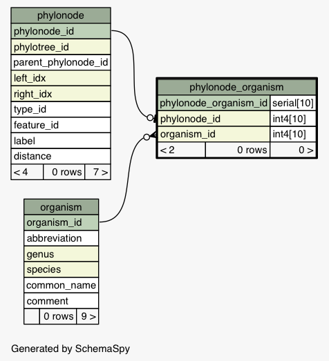
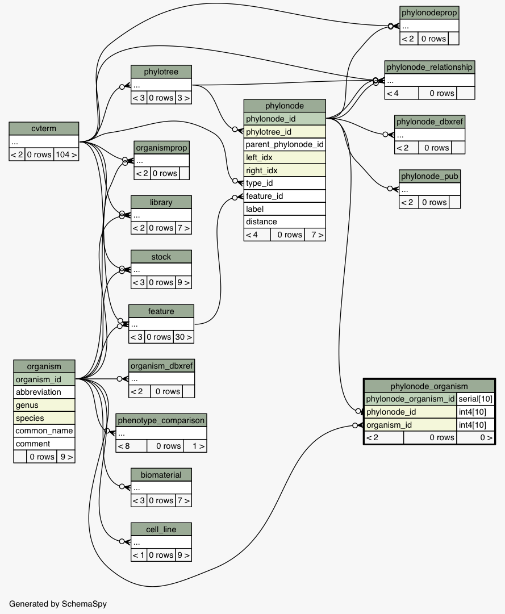

| Table david_chado.public.phylonode_organism This linking table should only be used for nodes in taxonomy trees; it provides a mapping between the node and an organism. One node can have zero or one organisms, one organism can have zero or more nodes (although typically it should only have one in the standard NCBI taxonomy tree).
|
Generated by SchemaSpy |
| ||||||||||||||||||||||||||||||||||||||||
Table contained 0 rows at Fri Jun 06 11:12 CDT 2014 | ||||||||||||||||||||||||||||||||||||||||
Indexes:
| Column(s) | Type | Sort | Constraint Name |
|---|---|---|---|
| phylonode_organism_id | Primary key | Asc | phylonode_organism_pkey |
| phylonode_id | Performance | Asc | phylonode_organism_idx1 |
| organism_id | Performance | Asc | phylonode_organism_idx2 |
| phylonode_id | Must be unique | Asc | phylonode_organism_phylonode_id_key |
|
  |